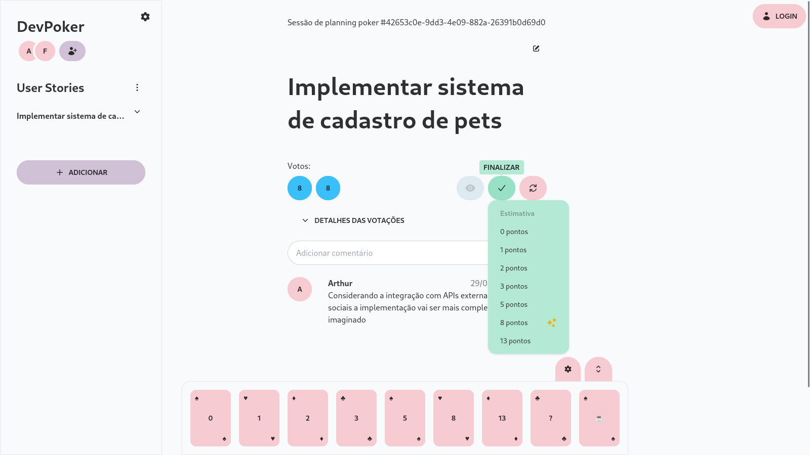

Trabalho desenvolvendo aplicações de frontend, backend, devops e infraestrutura em nuvem. Atualmente trabalho na
Pixforce
como desenvolvedor web full stack. Desenvolvo jogos como
hobby.
O jogo foi minha participação na Mini Jam 127: Cats². Esse é um projeto que eu tenho muito carinho e muito orgulho de ter programado.
UML Web Editor
Uma ferramenta online para construção colaborativa de diagramas UML.
Esse sistema foi construído em 2022 como meu trabalho de conclusão de curso do Tecnólogo de Análise e Desenvolvimento de Sistemas no IFRS. O projeto permitia que vários usuários colaborassem ao mesmo tempo para criação de diagramas de casos de uso e diagramas de atividades.
O frontend foi construído usando Nuxt. O backend usava NestJS e foi totalmente escrito usando Typescript. O desenho dos diagramas era gerado dinamicamente usando a biblioteca para processamento 2D Konva.js. Comunicação durante a edição de diagramas era feita usando Socket.IO.
Uma plataforma online para realização de sessões de Planning Poker.

Esse projeto foi desenvolvido entre 2023 e 2024 no meu trabalho final para minha pós
graduação em Desenvolvimento Full Stack pela PUCRS.
O sistema foi implementado usando Svelte, Tailwind e DaisyUI para o
frontend. O backend seguiu uma arquitetura orientada a eventos que
combinava aplicações em Python com o serviço de mensageria RabbitMQ.
A comunicação entre as duas partes era feita por meio de WebSockets,
o que permitia que os votos fossem propagados para todos os
participantes da sessão de Planning Poker assim que fossem enviados.